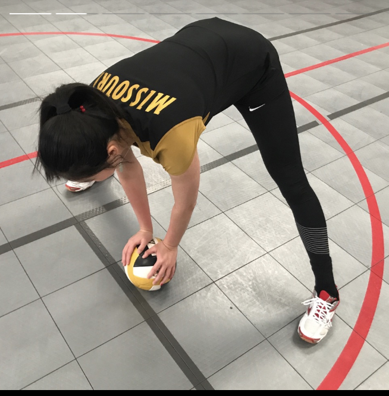
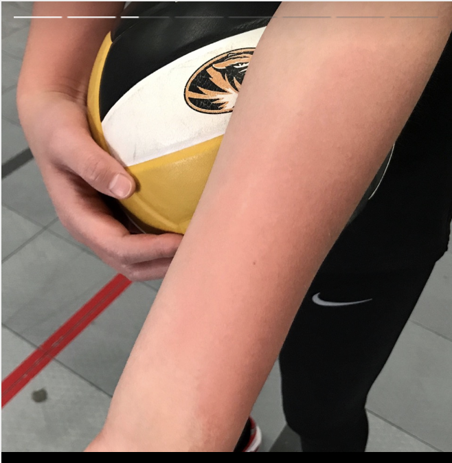

Jiaoran Qin
Welcome to my life!
Check these out!
-
Wendy Wang, an alumni from University of Missouri and now works at MU School of Medicine Dean’s Office Business and Finance
 -
Besides working at MU, Wendy Wang teaches private volleyball lesson during weekend at D-Line Sports. Photo by Jiaoran Qin

-
Be careful~
